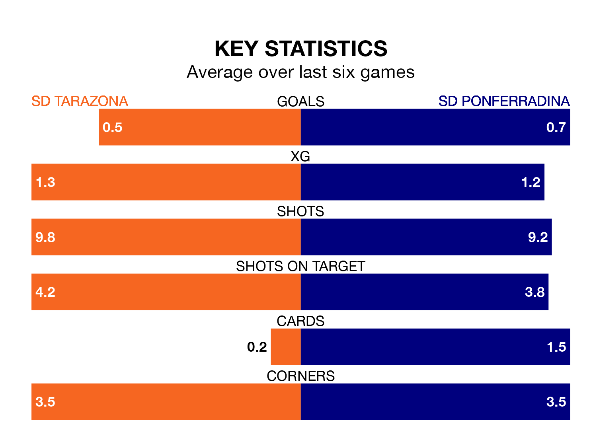

Relegation candidates SD Tarazona face a challenge against high-flying SD Ponferradina on Sunday.
SD Tarazona are 18th in the Primera Division RFEF Group 1 table, and have picked up five wins and 12 draws in their 28 games to date.
Ponferradina, meanwhile, are fourth in the standings with 50 points, having won 13 and drawn 11, and are two points behind table-toppers Deportivo La Coruña.
In Andrés Tomás Prieto Albert, Ponferradina can rely on one of the league's safest pair of hands. He has kept 12 clean sheets in his 25 appearances this season, and only one other 'keeper – Cultural y Deportiva Leonesa's Miguel Bañuz Antón – has been able to prevent the opposition scoring on more occasions in Primera Division RFEF Group 1.
In Tarazona's net, Yoel Ramírez has seven clean sheets in 13 games. He has conceded a goal every 130 minutes, 20% more often than the 150 minutes between goals for Prieto Albert.
The home side are in bad form in Primera Division RFEF Group 1, with no wins and four draws from their last six games.
With a win and four draws over that period, the visitors' form is better – they have taken seven points from 18, compared to Tarazona's four.
With 19 goals in 28 games so far this season, Tarazona are the league's lowest scorers with 0.7 goals per game. And they are conceding at an average rate, letting in 27 goals at a rate of 1.0 per game.
Ponferradina, meanwhile, are average scorers, with 1.0 goal per game. They have conceded 0.6 goals per game.
Tarazona's last match was on March 16, a 0-0 draw against CF Fuenlabrada.
Ponferradina drew 0-0 with CD Lugo last time out, on Sunday.
Updated: 10:19 (UTC), 22/03/24